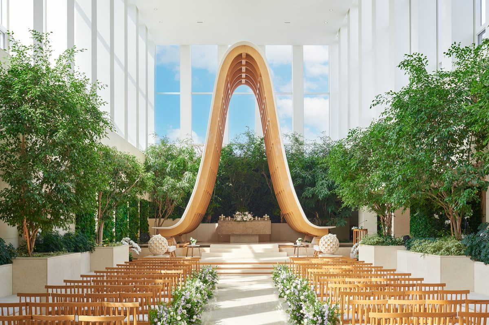

하객 200명, 정가 기준이에요(최소 보증이 200명을 넘으면 그 인원). 반드시 내야 하는 비용만 더했고, 선택 항목은 따로 적었어요. 「—」는 후기에 따로 내는 비용이 나오지 않았다는 뜻이에요.
순위
홀
대관료
식대
꽃·연출
촬영지정 스냅
음료·주류
기타 필수
예상 총액
선택 항목
1
메리스에이프럴
300만
1,400만7만 × 200명
450만꽃장식 및 기타 부대비용
—
—
—
2,150만
—
2
아모르하우스
200만
1,400만7만 × 200명
50만웨딩 디렉팅
—
—
—
1,650만
생화 연출 추가 280만, 풍선이벤트 20만
3
W스퀘어컨벤션 ★
700만
1,380만6.9만 × 200명
대관료에 포함
115만지정 본식스냅·원판·지정 본식스냅 원본
와인 5병 기본
—
2,195만
—
4
오드힐하우스
1,200만
1,900만9.5만 × 200명
대관료에 포함
—
—
50만포토테이블·플라워샤워
3,150만
연주 60만, 전문사회 40만, 폐백실 50만
5
엘블레스
1,100만
2,000만10만 × 200명
대관료에 포함
—
식대에 포함
—
3,100만
—
6
아르베
1,100만
1,720만8.6만 × 200명
대관료에 포함
—
식대에 포함
—
2,820만
원판촬영 99만
7
브라이드밸리
850만
1,700만8.5만 × 200명
—
—
—
—
2,550만
부케 22만, 혼주메이크업 22만, DVD 촬영 44만
8
세인트메리엘
980만
1,960만9.8만 × 200명
—
—
—
—
2,940만
—
9
더채플앳논현
1,300만
3,250만13만 × 250명
—
—
—
—
4,550만
—
10
아펠가모 선릉
1,100만
2,200만11만 × 200명
—
—
154만음료·주류
—
3,454만
—
홀별 정리
후기 요약은 2024년 이후 네이버·카카오맵 리뷰, 웨딩킹 카페 후기, 네이버 블로그·결혼 카페 글 중 홍보글을 뺀 실후기만 읽고 쓴 것이에요.
사진: 네이버 플레이스 업체 사진
강남구 역삼동 · 하우스웨딩
메리스에이프럴
1위 · 80점
예상 총액 (200명·정가)
2,150만대관 300만 + 꽃장식 및 기타 부대비용 450만 + 식대 7만 × 200명
가까운 역
신논현역 406m직선거리
최소 보증
60~150명후기 기준
생화 장식과 꽃향기 칭찬이 가장 많고, 신논현역 셔틀과 무료 발렛, 하객 참여 이벤트(엽서 행잉, 셀프 포토부스)도 자주 나와요. 3시간 반 단독 대관과 60~100명부터 가능한 낮은 보증인원도 장점으로 꼽혀요. 아쉬운 점은 역에서 오르막 길이고, 150명을 넘으면 홀과 로비가 붐벼요.
생화 장식과 꽃향기
셔틀·무료 발렛으로 하객 교통 편함
하객 참여 이벤트(엽서 행잉·셀프 포토부스)
역에서 오르막 언덕길
홀·로비·축의대 협소(150명 넘으면 혼잡)
음식 보통 이하라는 평, 계약 전 시식 불가
후기를 읽고 매긴 점수 4.4 · 카카오맵 4.9 (263명) · 네이버 5.0 (17명) · 2024년 이후 기준
확인할 것 계약 전에 시식이 안 되고 음식이 보통이라는 평도 있으니 식대와 메뉴를 꼼꼼히 물어봐요. 하객이 150명을 넘으면 홀과 축의대가 좁고 역에서 오르막이라, 걸어오는 길도 직접 확인해요.
예약 전화 02-514-3676이나 네이버 예약으로 상담을 잡아요. 카톡으로도 문의할 수 있고, 해외에 살면 줌 상담도 돼요.
항목별 점수
가격
위치
평점
후기 수
최소 보증
비수기 할인
음식
실후기 542건(카카오 263 · 네이버 155 · 웨딩킹 4 · 블로그·카페 120)으로 정리했어요. 홍보글 191건은 뺐어요. 다이렉트 포인트를 받았다고 밝히고 추천인 코드를 안내하는 글이 대부분이에요.
사진: 네이버 플레이스 업체 사진
강남구 역삼동 · 하우스웨딩
아모르하우스
2위 · 75점
예상 총액 (200명·정가)
1,650만대관 200만 + 웨딩 디렉팅 50만 + 식대 7만 × 200명 · 선택: 생화 연출 추가 280만, 풍선이벤트 20만
가까운 역
역삼역 485m직선거리
최소 보증
100명후기 기준
합리적인 견적과 꽃으로 꾸민 하우스웨딩 분위기, 역삼역에서 걸어가기 편한 점이 가장 많이 나와요. 천장을 열고 풍선을 날리는 연출과 직접 조리한 뷔페도 칭찬이 있어요. 반면 홀과 버진로드가 좁고 짧다는 말, 화장실과 신부대기실이 좁다는 말이 많아요.
합리적인 견적(정찰제)
꽃장식이 풍성한 하우스웨딩 분위기
역삼역 도보 접근성
홀 협소, 버진로드 짧고 단차 없음
화장실·신부대기실 협소
외부 주차장, 역에서 오르막 길
후기를 읽고 매긴 점수 4.2 · 카카오맵 4.0 (2명) · 2024년 이후 기준
확인할 것 홀이 작고 버진로드가 짧으니 하객 수가 맞는지와 신부대기실·화장실 크기를 직접 봐요. 반야외라 여름 더위와 겨울 추위, 비 오는 날 어떻게 되는지도 물어봐요.
예약 전화 02-562-6936이나 카카오톡 채널 아모르하우스로 상담을 잡아요. 가격은 홈페이지에 나와 있어요.
항목별 점수
가격
위치
평점
후기 수
최소 보증
비수기 할인
음식
실후기 78건(카카오 2 · 네이버 0 · 웨딩킹 6 · 블로그·카페 70)으로 정리했어요. 홍보글 65건은 뺐어요. 다이렉트 포인트를 받고 추천인 코드를 안내하는 글과 스냅 업체가 상담을 유도하는 글이 대부분이에요.
사진: 네이버 플레이스 업체 사진
성남시 분당구 판교 · 채플홀·그레이스홀
W스퀘어컨벤션 ★
3위 · 70점
예상 총액 (200명·정가)
2,195만대관 700만 + 지정 본식스냅·원판 100만 + 지정 본식스냅 원본 15만 + 식대 6.9만 × 200명
가까운 역
판교역 669m직선거리
최소 보증
150명후기 기준
주차가 넉넉하다는 말이 가장 많이 나와요(건물 안 300대에 맞은편 건물까지 씀). 산낙지탕탕이·즉석 스테이크가 있는 뷔페와, 홀마다 연회장이 따로 있어 하객 동선이 안 겹치는 점도 칭찬해요. 반면 로비·축의대가 좁고 채플홀이 180석으로 작다는 말이 이어져요.
단독 건물, 넉넉한 주차
뷔페가 맛있음(산낙지탕탕이·즉석 스테이크)
홀별 연회장 분리, 하객 동선 안 겹침
로비·축의대 좁음
채플홀 작음(180석), 버진로드 단차 없음
본식 스냅 지정업체 필수(추가 비용)
후기를 읽고 매긴 점수 4.1 · 2024년 이후 기준
확인할 것 본식 스냅은 홀과 연계된 4개 업체 중에서 골라야 해서 추가 비용을 확인해요. 채플홀 보증인원 250명은 부담이라는 후기가 있고 인기 있는 날짜와 시간대는 빨리 마감되니, 상담은 일찍 잡아요. 엘리베이터가 2대뿐이라 하객이 몰릴 때 얼마나 기다리는지도 직접 봐요.
예약 전화 031-703-0116이나 카카오톡 채널 W스퀘어컨벤션으로 상담을 잡아요. 홈페이지는 w-square.kr이에요.
항목별 점수
가격
위치
평점
후기 수
최소 보증
비수기 할인
음식
실후기 367건(카카오 0 · 네이버 131 · 웨딩킹 0 · 블로그·카페 236)으로 정리했어요. 홍보글 230건은 뺐어요. W스퀘어컨벤션 공식 블로그 글과 다이렉트 포인트를 받고 추천인 코드를 안내하는 글이 대부분이에요.
사진: 오드힐하우스 홈페이지
서초구 방배동 · 단독홀
오드힐하우스
4위 · 69점
예상 총액 (200명·정가)
3,150만대관 1,200만 + 포토테이블 30만 + 플라워샤워 20만 + 식대 9.5만 × 200명 · 선택: 연주 60만, 전문사회 40만
가까운 역
방배역 301m직선거리
최소 보증
100명후기 기준
방배역에서 걸어서 2~5분이라는 말이 가장 많고, 한 팀만 쓰는 단독홀과 2시간 예식 간격, 화이트톤 인테리어를 칭찬해요. 아쉬운 점은 홀이 작고 층고가 낮다는 말, 등받이 없는 하객 의자, 주차가 부족하다는 말이에요. 조감도만 보고 계약했다가 실물이 달랐다는 후기도 있어요.
방배역 도보 2~5분
단독홀, 2시간 간격이라 여유로움
화이트톤 밝은 인테리어, 사진 잘 나옴
홀 작고 층고 낮음(착석 100~120명)
등받이 없는 하객 의자
주차 부족
후기를 읽고 매긴 점수 4.0 · 카카오맵 4.8 (24명) · 네이버 5.0 (7명) · 2024년 이후 기준
확인할 것 등받이 없는 의자와 홀 크기, 주차 방법은 직접 가서 보고, 계약금 환불과 취소 수수료 조건을 꼭 물어봐요. 후기를 쓰면 할인해 주는 혜택이 있었다는 말이 있으니, 상담 때 지금도 그런 혜택이 있는지 물어봐요.
예약 네이버 예약으로 상담을 잡거나 전화 0507-1410-5038로 문의해요. 카톡 채널 @오드힐하우스도 있어요.
항목별 점수
가격
위치
평점
후기 수
최소 보증
비수기 할인
음식
실후기 211건(카카오 24 · 네이버 52 · 웨딩킹 10 · 블로그·카페 125)으로 정리했어요. 홍보글 155건은 뺐어요. 다이렉트 포인트를 받고 추천인 코드를 안내하는 글과 홀 공식 계정의 홍보글이 대부분이에요.
사진: 네이버 플레이스 업체 사진
서초구 양재동 · 엘타워 지하 단독홀
엘블레스
5위 · 66점
예상 총액 (200명·정가)
3,100만대관 1,100만 + 식대 10만 × 200명
가까운 역
양재역 149m직선거리
최소 보증
200명후기 기준
양재역 9번 출구와 바로 이어지는 교통이 가장 많이 나와요. 단독홀에 홀·대기실·연회장이 한 층이라 동선이 편하다는 말, '밥블레스'라 불리는 뷔페가 맛있다는 말도 많아요. 반면 홀이 좁고 층고가 낮다는 말과 일체형 긴 의자가 불편하다는 말이 이어져요.
양재역 9번 출구 직결
뷔페가 맛있음(밥블레스)
단독홀, 한 층 동선
홀 좁고 층고 낮음, 버진로드 짧음
채플식 일체형 긴 의자 불편
로비·축의대 좁고 번잡
후기를 읽고 매긴 점수 4.1 · 카카오맵 2.4 (9명) · 2024년 이후 기준
확인할 것 늦은 타임이면 피로연장 이용 시간이 끝나 식사 도중 나와야 했다는 후기가 있으니, 사진 촬영 뒤 식사 시간이 얼마나 남는지 계약 전에 확인해요. 홀 층고와 일체형 의자는 직접 가서 봐요.
예약 전화 02-526-0300, 카카오톡 채널 '엘블레스', 홈페이지(elbless.com)로 상담 예약해요. 네이버 예약은 없어요.
항목별 점수
가격
위치
평점
후기 수
최소 보증
비수기 할인
음식
실후기 193건(카카오 9 · 네이버 5 · 웨딩킹 9 · 블로그·카페 170)으로 정리했어요. 홍보글 118건은 뺐어요. 다이렉트 포인트를 받았다고 밝히고 추천인 코드와 견적 메일을 유도하는 글이 대부분이에요.
사진: 네이버 플레이스 업체 사진
강남구 역삼동 · 단독홀
아르베
6위 · 63점
예상 총액 (200명·정가)
2,820만대관 1,100만 + 식대 8.6만 × 200명 · 선택: 원판촬영 99만
가까운 역
선정릉역 447m직선거리
최소 보증
200명후기 기준
뷔페와 생화 장식이 가장 많이 나와요. 회전초밥, 양갈비, 젤라또와 다양한 주류가 있는 뷔페와 생화 가득한 밝은 홀을 칭찬하고, 강남보다 견적이 합리적이라는 말도 많아요. 반면 하객 주차가 외부 주차장이라 걸어서 이동해야 하고, 홀이 작고 층고가 낮다는 말이 많아요.
뷔페가 맛있음(회전초밥·양갈비·젤라또·주류)
생화 가득한 밝은 하우스웨딩 홀
강남 대비 합리적 견적, 낮은 보증인원
하객 주차는 외부 주차장(도보 3~5분)
홀 작고 층고 낮음, 단차 없음
1층 로비·축의대 좁고 혼잡
후기를 읽고 매긴 점수 4.3 · 카카오맵 4.4 (75명) · 네이버 5.0 (1명) · 2024년 이후 기준
확인할 것 좌석이 120~150석이라 하객 수가 맞는지와, 횡단보도를 건너 걸어가는 외부 주차장 동선을 확인해요. 상담에서 계약을 서두르게 한다는 후기와 계약금 환불이 한 달 가까이 걸렸다는 후기가 있으니 환불 조건도 챙겨요.
예약 전화 02-564-7031이나 홈페이지 arvewedding.kr로 상담 예약해요. 네이버 예약은 없고, 월요일은 쉬어요.
항목별 점수
가격
위치
평점
후기 수
최소 보증
비수기 할인
음식
실후기 248건(카카오 75 · 네이버 5 · 웨딩킹 6 · 블로그·카페 162)으로 정리했어요. 홍보글 138건은 뺐어요. 다이렉트 포인트나 카페 활동 포인트를 받았다고 밝히고 추천인 코드를 안내하는 글이 대부분이에요.
양재역에서 걸어서 2~5분이고 양재IC와 가깝다는 말이 가장 많고, 한 층에 홀·연회장·대기실이 있어 동선이 편하다는 말과 밥밸리 뷔페가 맛있다는 말이 뒤따라요. 강남권보다 대관료와 식대가 저렴하다는 말도 있어요. 반면 지하 1층이라 답답하고, 홀이 작고 층고가 낮으며 입구와 시설이 올드하다는 말이 많아요.
양재역 도보 2~5분, IC 인접
단독홀, 한 층 동선
뷔페가 맛있음(밥밸리)
지하 1층, 채광 없고 답답함
홀 작고 층고 낮음(착석 150~180석)
입구·시설이 올드함
후기를 읽고 매긴 점수 4.0 · 카카오맵 3.7 (10명) · 네이버 5.0 (2명) · 2024년 이후 기준
확인할 것 하객이 250명 이상이면 좌석과 연회장 분리를 확인하고, 예식 간격이 1시간 반이라 앞뒤 예식이 겹쳐 혼잡하지 않은지 물어봐요. 주차장이 깊고 입구가 가파르며 무료는 2시간이라 주차 동선도 직접 봐요.
실후기 236건(카카오 10 · 네이버 6 · 웨딩킹 3 · 블로그·카페 217)으로 정리했어요. 홍보글 207건은 뺐어요. 다이렉트 포인트를 받았다고 밝히고 추천인 코드를 안내하는 글이 대부분이에요.
사진: 네이버 플레이스 업체 사진
강남구 역삼동 · 단독홀
세인트메리엘
8위 · 58점
예상 총액 (200명·정가)
2,940만대관 980만 + 식대 9.8만 × 200명
가까운 역
강남역 457m직선거리
최소 보증
200명후기 기준
강남역에서 걸어가거나 셔틀을 탈 수 있다는 말이 가장 많고, 더컨벤션 계열 뷔페가 맛있다는 말과 넓고 예쁜 신부대기실 칭찬도 많아요. 아쉬운 점은 건물 주차장이 150대뿐이라 외부 주차장으로 나눠 대야 한다는 것, 홀이 작고 층고가 낮으며 기둥이 뒷좌석 시야를 가린다는 것이에요.
강남역 도보·셔틀 접근성
뷔페가 맛있음(더컨벤션 계열)
넓은 신부대기실(전용 화장실·홀 직접 입장)
주차 협소(건물 150대), 외부 주차장 분산
홀 작고 층고 낮음
기둥에 시야 가림
후기를 읽고 매긴 점수 4.0 · 카카오맵 3.5 (21명) · 2024년 이후 기준
확인할 것 기둥에 가리는 좌석이 몇 개인지 투어 때 직접 확인해요. 건물 주차장이 150대뿐이라 하객 차량을 어디에 세우는지, 엘리베이터와 수유실이 있는지도 물어봐요.
예약 전화 02-538-3300 또는 카카오톡 채널 @세인트메리엘, 홈페이지 saintmeriel.co.kr로 상담을 잡아요. 전화 연결이 어렵다는 후기가 있어요.
항목별 점수
가격
위치
평점
후기 수
최소 보증
비수기 할인
음식
실후기 243건(카카오 21 · 네이버 0 · 웨딩킹 3 · 블로그·카페 219)으로 정리했어요. 홍보글 185건은 뺐어요. 다이렉트결혼준비 포인트를 받았다고 밝히고 추천인 코드를 안내하는 글이 대부분이에요.

사진: 네이버 플레이스 업체 사진
강남구 논현동 · 채플홀
더채플앳논현
9위 · 58점
예상 총액 (200명·정가)
4,550만대관 1,300만 + 식대 13만 × 250명
가까운 역
언주역 249m직선거리
최소 보증
250명후기 기준
주차가 좁아 외부 발렛을 맡기고 셔틀로 차를 찾으러 가야 한다는 불만이 가장 많이 나와요. 라포레홀은 층고가 높고 자연광이 들어와 예쁘다는 말과, 스마트예약·정찰제라 가격이 투명하다는 말도 많아요. 뷔페는 맛있다는 평이 많지만 식대에 비해 별로라는 평도 있어요.
라포레홀 높은 층고, 자연광
뷔페가 맛있음(밥채플)
스마트예약·정찰제로 가격이 투명함
주차 협소, 발렛·셔틀 불편
대관료·식대가 높음
보증인원에 비해 홀이 좁음
후기를 읽고 매긴 점수 3.9 · 카카오맵 3.4 (67명) · 2024년 이후 기준
확인할 것 하객이 많으면 라포레홀 착석 인원(약 180석)과 뷔페 줄(20~30분 기다렸다는 후기)을 물어보고, 외부 발렛 뒤 셔틀로 차를 찾는 방식을 확인해요.
예약 네이버 예약은 없어요. 전화 02-562-1121, 카카오톡 채널 @더채플앳논현, 홈페이지 thechapel.co.kr로 상담을 잡으세요.
항목별 점수
가격
위치
평점
후기 수
최소 보증
비수기 할인
음식
실후기 377건(카카오 67 · 네이버 17 · 웨딩킹 2 · 블로그·카페 291(표본 추정))으로 정리했어요. 홍보글 307건은 뺐어요. 카페 추천인 코드를 안내하는 글과 스냅·부케 업체가 상담을 유도하는 글이 대부분이에요.
사진: 네이버 플레이스 업체 사진
강남구 대치동 · 단독홀
아펠가모 선릉
10위 · 55점
예상 총액 (200명·정가)
3,454만대관 1,100만 + 음료·주류 154만 + 식대 11만 × 200명
가까운 역
선릉역 266m직선거리
최소 보증
200명후기 기준
선릉역에서 걸어서 2~5분이라는 말이 가장 많고, 홀·연회장·신부대기실이 한 층이라 동선이 편하다는 말과 '밥펠가모'라 불리는 뷔페가 맛있다는 말이 뒤따라요. 홀이 180석으로 작고, 지하주차장 진입로가 좁고 가팔라 운전이 어렵다는 말도 많아요. 뷔페는 고기류가 적고 보충이 느리다는 말도 일부 있어요.
선릉역 도보 2~5분
뷔페가 맛있음(밥펠가모)
홀·연회장·대기실 한 층 동선
홀 작음(180석), 하객 많으면 붐빔
주차장 진입로 좁고 가파름
오피스 건물이라 웨딩홀 느낌 덜함
후기를 읽고 매긴 점수 4.0 · 카카오맵 2.8 (21명) · 2024년 이후 기준
확인할 것 보증인원이 250명 이상이면 홀이 좁다는 후기가 많으니 하객 수를 먼저 따져 봐요. 주차장 진입로와 건물 외관은 직접 보고, 식대가 10만원 안팎이니, 고기류가 적고 보충이 느리다는 후기를 시식 때 직접 확인해요.
예약 전화 02-2183-0230, 카카오톡 채널 '아펠가모 선릉', 홈페이지 apelgamo.com으로 예약해요. 상담 보증금 5만원이 있어요.
항목별 점수
가격
위치
평점
후기 수
최소 보증
비수기 할인
음식
실후기 245건(카카오 21 · 네이버 3 · 웨딩킹 4 · 블로그·카페 217)으로 정리했어요. 홍보글 143건은 뺐어요. 다이렉트 포인트나 카페 활동 포인트를 받았다고 밝히고 추천인 코드를 안내하는 글이 대부분이에요.
점수 매긴 방법
기준마다 1~5점을 매기고, 비중을 곱해 더해요. 총점 = Σ(비중 × 점수 ÷ 5). 예: 가격 5점이면 25점, 3점이면 15점이에요.
기준
비중
무엇으로 쟀나
5점
4점
3점
2점
1점
가격
25
예상 총액 = 대관료 + 필수 부대비용(꽃·연출·지정 스냅·포토테이블·음료 등) + 식대 × 200명 (최소 보증이 200명을 넘으면 그 인원)
2,000만 이하
2,500만 이하
3,000만 이하
3,500만 이하
그 이상
위치
20
가장 가까운 지하철역까지 직선거리
250m 이하
400m 이하
600m 이하
900m 이하
그 이상
평점
15
(후기를 읽고 매긴 점수 + 카카오맵·네이버 별점) ÷ 2. 별점은 2024년 이후, 10명 이상일 때만
4.7 이상
4.4 이상
4.0 이상
3.5 이상
그 미만
후기 수
15
2024년 이후 네이버 방문자 리뷰 + 카카오맵 리뷰 + 웨딩킹 후기 + 네이버 블로그·결혼 카페 실후기(홍보글 뺌)
500건 이상
300건 이상
150건 이상
60건 이상
그 미만
최소 보증
10
후기에 나온 가장 적은 보증인원
100명 이하
150명 이하
180명 이하
200명 이하
200명 초과
비수기 할인
10
1·2·7·8월 예식 후기의 할인율과 카페·블로그의 「비수기 할인」 언급
언급 2건 이상 또는 30% 이상
언급 1건 또는 15% 이상
근거 없음
할인 5% 미만
음식
5
웨딩킹 후기와 블로그·카페 실후기의 음식평 평균
4.7 이상
4.4 이상
4.1 이상 또는 평 2건 미만
3.8 이상
그 미만
뺀 곳과 자료
직접 뺀 곳: 분당앤스퀘어, 더채플앳청담, 마리아쥬스퀘어, 브라이튼하우스 강남, 엘리에나호텔, 토브헤세드(위치). 호텔 웨딩은 모두 뺐어요.
후기는 2024년 1월 이후 것만 썼어요(네이버는 방문일 기준). 협찬·체험단·원고료·지원금을 받았다고 밝힌 글, 결혼 카페 포인트를 받고 쓴 글, 추천인 코드나 업체 링크가 붙은 글, 할인·서비스를 받는 조건으로 쓴 후기 이벤트 글은 홍보글로 보고 점수·후기 수·요약에서 모두 뺐어요.
블로그·카페 글은 네이버 지도에서 각 홀에 연결된 글이에요. 네이버가 검색어 하나에 100개까지만 보여줘서 홀마다 150~450개를 읽었어요. 더채플앳논현은 386개 중 110개를 골라 읽고 실후기 비율로 전체 수를 추정했어요.